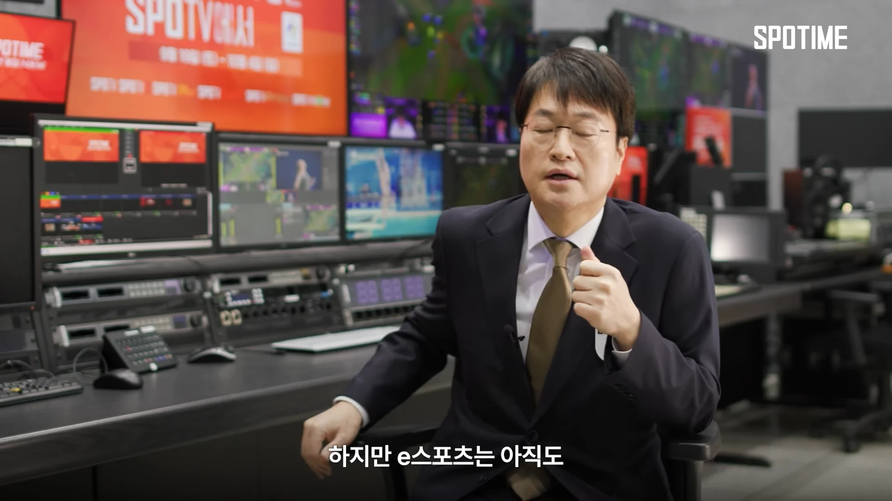
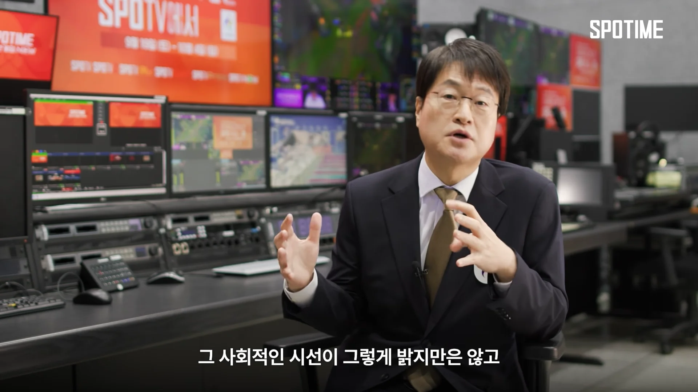
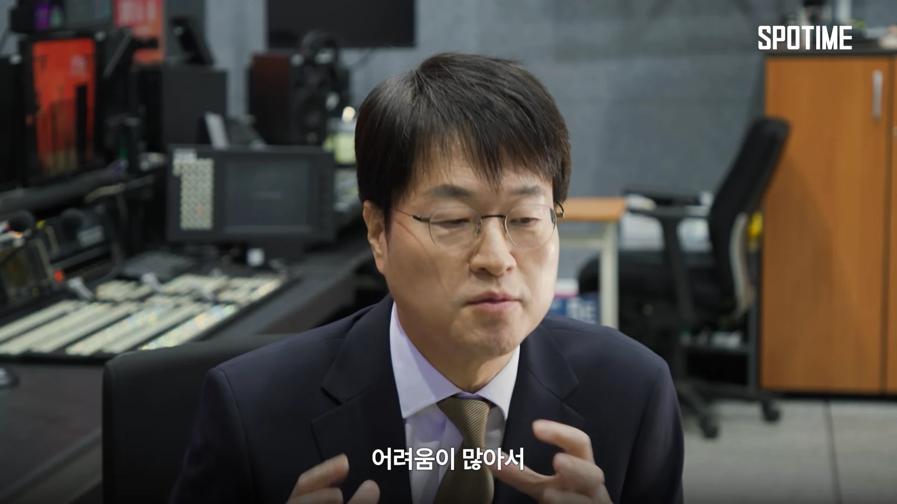
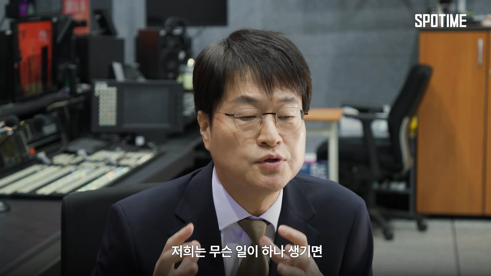
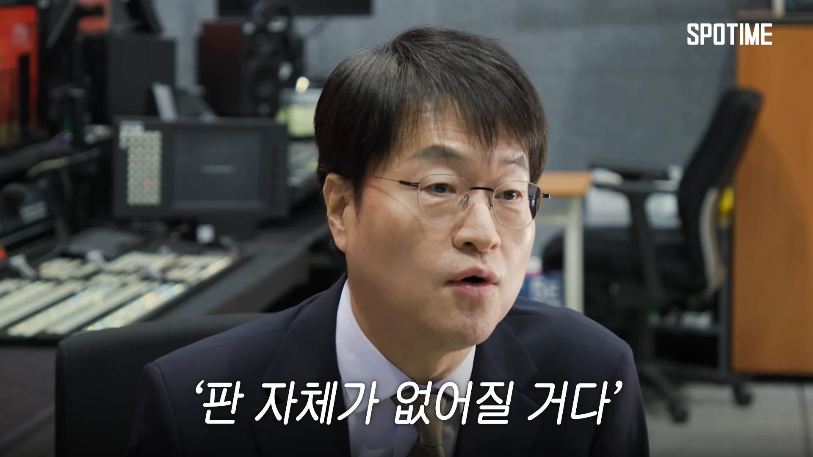
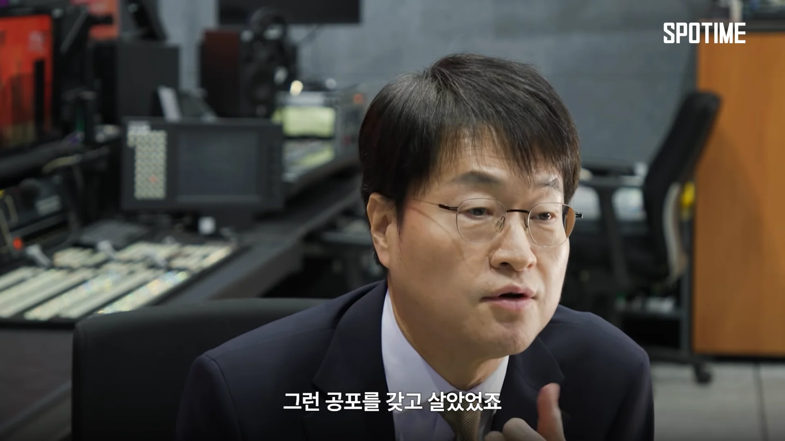
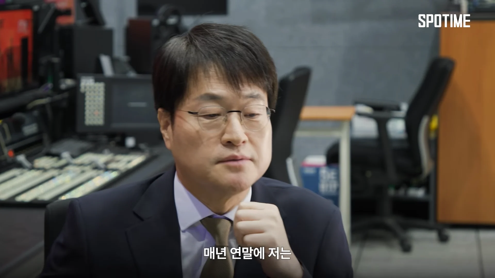
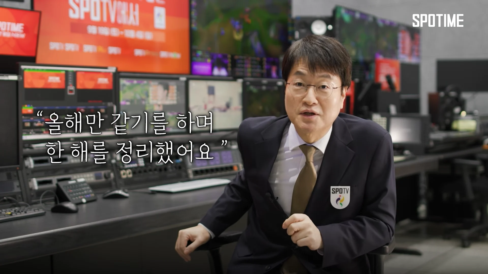

이스포츠판 최고참인 전용준 캐스터 조차
"사회적 시선이 밝지만은 않기 때문에 뭐하나 잘못하면 판이 없어질 수도있다"는
공포감을 언급하는게 이스포츠임








이스포츠판 최고참인 전용준 캐스터 조차
"사회적 시선이 밝지만은 않기 때문에 뭐하나 잘못하면 판이 없어질 수도있다"는
공포감을 언급하는게 이스포츠임
죽창먼저찌르고 죽창찌른거 후회한안다 니새끼는 마녀임 ^^
하지만 공개적으로 죽창 찌른건 사과함 ^^
이러는새끼 팬하는놈답다 ㅋㅋㅋ
시발 9년이나 지나서 김성회때문에 강제로 사과하고선 ㅋㅋㅋ
이래서 롤대남이 역겹다는거지
넹~ 강제로 사과고 뭐고 니 뇌피셜로 말씀하시는거
다 니 말 맞으니깐 그렇게 사세요~
니 뇌피셜로는 씨맥 팬 아닌 나도 씨맥 팬이고 가세연 팬이고 타진요고 ㅋㅋㅋㅋㅋㅋㅋㅋ
지구도 평평하고 빌게이츠가 백신으로 사람 조종도 하고
랩틸리언도 있고 그쵸?
참 인생 편하게 사시네요 부러워요
응 니새끼는 마녀지만 사과했으니깐 아몰랑~
자의로 사과한것도아니고
9년이나 지나서 김성회때문에 강제로 어거지로 사과했으면 됐다마인드
여윽시 사이코패스가 아니면 상상할수없는 마인드 ㅋㅋㅋㅋㅋ
끝까지 뇌피셜이네 자의로 사과한지 타의로 사과한지
당사자가 아니면 모르는데ㅋㅋㅋㅋㅋㅋ
그쵸 자기 생각이 맞죠 암요 암요
응~ 캬하하가 다이야기한거 말을해줘도 끝까지 헛소리하죠
응~ 9년넘게 사과안하다가 사과웨이브때 응니새끼 헬퍼지만 공개적으로 이야기한것만 사과한게
사과라고 우기죠 ㅋㅋㅋㅋㅋㅋ
현실은 시발아
김성회가 안터트렸으면 사과할생각도없었고
씨맥만 유일하게 헬퍼라고 선동하고있쥬?
근데 아까부터 김성회 운운하던데
씨맥이 사과한게 김성회가 사과문 올린 이후라고 생각하는거임?
니도 뇌피셜로 이야기하듯이 나도 뇌피셜로 이야기해보면
씨맥은 캬하하를 도파 합방할때 만났다고 했고
캬하하 도파 합방은 2022년 경이야
이후에 방송에서 해당 내용을 밝힌게 2025년인거임 병신아
왜 사과를 2025년에 김성회가 터트리고 했다고 생각함?
인생이 뇌피셜이네 그쵸?
나도 뇌피셜로 이야기해보면
라면서 뇌피셜드립치는거보니깐
본인이 뇌피셜치는거 인지는 하고있었나보네? ㅋㅋㅋ
살다살다 니새끼는 마녀가 맞지만 사과했으니깐 넘긴다는 개소리를
당당하게 하는새끼다보니깐 상상을초월하긴하네
씨맥인지 캬하하인지 뭔지 모르겠지만
맥락상 캬하하세요?
남자의 전유물들은 위협받는게 요즘 세상이니깐 ㅋㅋ
페이커 은퇴하면 롤판 없어질껄?
지금도 페이커 없어지면 누가보냐 하는 소리 나오니까...ㅋㅋ
선수가 찐빠내서 판이 사라지는 경우만 두 번 보았고
게임사가 발 빼서 판이 사라지는 경우도 보았다.
전캐도 그걸 전부 봐 온 입장이기 때문에 누구보다 불안함을 알고 있으시겠지. 아 생각해보니 사례가 전부 블리자드 게임이네?
지금도 e스포츠 죽이려는 병신들 천지라서 조심해야함
lck 레전더리스로 언급 안 하고 사과도 안 하는데 무슨 스포츠임 ㅋㅋㅋ
사실 e스포츠를 국가대항전이나 올림픽 같은 경기에 정식 채택할 수가 없는 게 정형화된 큰 룰이 없고 계속 바뀌기 때문에 될 수가 없는 거임
축구로 예를 들면 수많은 시행착오를 겪으면서 완전히 굳어진 전체적인 룰이 존재하고, 그리고 과학의 발전과 현대 흐름에 따라 조금씩 추가될 뿐 뼈대는 바뀌지 않음
그러나 게임은 일단 게임을 만든 기업 그리고 인기에 따라 이리갔다가 저리 갔다가 와따가따 하면서 뼈대도 바뀌고 전체적인 룰도 계속 바뀌고 인기에 따라 또 바뀌고
그래서 e스포츠는 그냥 게임사에서 주관하는 자체 대회 말고는 솔직히 국가대항에 들어올 수가 없음
아시안게임도 나중에 10년 20년 뒤에 롤 인기 완전히 사라져서 한국 중국에서조차 인기 없고 서비스 종료되면 종목 자체가 사라지는데.... 계속 새로운 종목 넣는 것도 한 두번이지 그러니까 아시안 게임의 무게가 가벼워 지는 거임
예예 캬하하가 그만하자고
다른 피해자 만들지 말자고 하는데
지가 뭐라고 아뇨 죽창들고 찌르겠습니다~ ㅇㅈㄹ
참으로 건강한 인터넷 문화다 그쵸?
님같은 분들이 있어서 참 다행이에요~